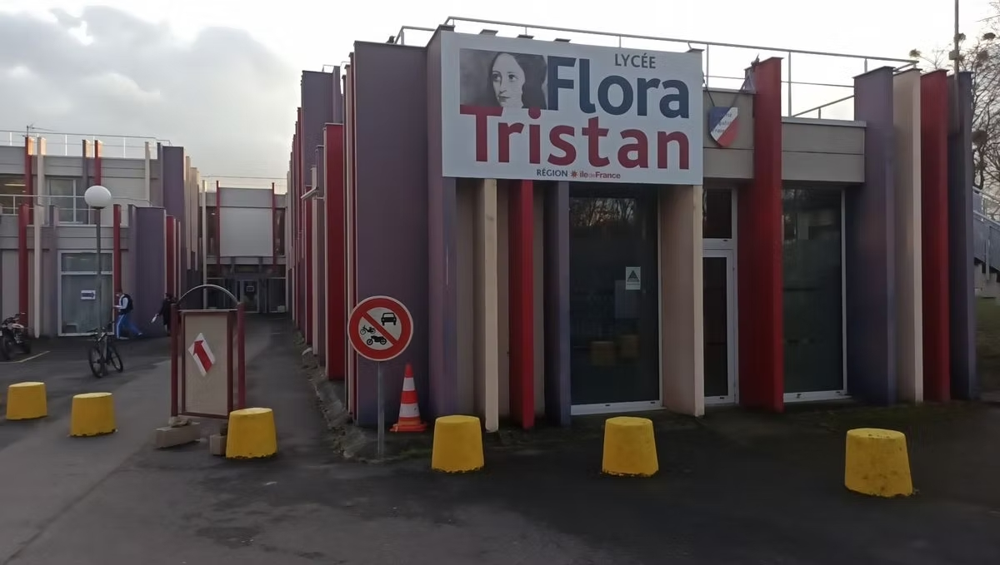

EXPÉRIENCE ET FORMATIONS
Chacune des années d'études que j'ai suivies et chacun des postes que j'ai occupés m'ont permis d'apprendre et de progresser. Ils ont constitué en partie la personne que je suis devenue aujourd'hui. Vous trouverez plus d'informations sur mon parcours ci-dessous.
Seconde Général et Bac Stmg (Sciences et Technologies du Management et de la Gestion)
Lycée Flora Tristan, Noisy le Grand (93160)
Septembre 2020 - Juin 2023
Pendant ma période de lycée, j'ai pu apprendre de nouvelles connaissances et j'ai pu prendre en maturité grâce à l'encadrement que j'ai eu au sein de ce lycée. Dans ce lycée, j'ai commencé par une seconde général auxquelles j'ai pu prendre en maturité et faire un choix sur l'orientation que je voulais. Après avoir longuement réfléchi, j'ai décidé de faire une 1er stmg. Au cours de ces deux dernières années, j'ai pu me faire une idée de ce que je voulais faire après mon bac. Au cours de ces années de lycée que j'ai appréciées, j'ai pu me faire une idée de ce que je voulais faire.
BTS SIO (Service informatique aux organisations)
Campus Charles de Foucauld , Paris (75018)
Septembre 2023 - Juin 2025
Actuellement, je suis en BTS SIO (Services Informatiques aux Organisations) avec une spécialité SLAM (Solutions Logicielles et Applications Métier). À travers cette formation, j'ai pu acquérir des compétences techniques solides en développement, notamment dans des langages tels que Java, PHP et Python. J'ai appris à concevoir et développer des bases de données, en utilisant Mysql ou Looping pour les MCD et des outils modernes pour garantir efficacité et performance.
DIPLÔME ET CERTIFICATIONS
Ici vous allez apercevoir les différentes certifications et diplômes que j'ai obtenus au cours de mes différentes formation.
Attestation de comptétances en langues vivantes (ÉTRANGÈRES ET RÉGIONALES)
baccalauréat STMG
Voici mon relevé de note du baccalauréat STMG option SIG obtenu en juin 2023 au lycée Flora Tristan à Noisy-le-Grand.